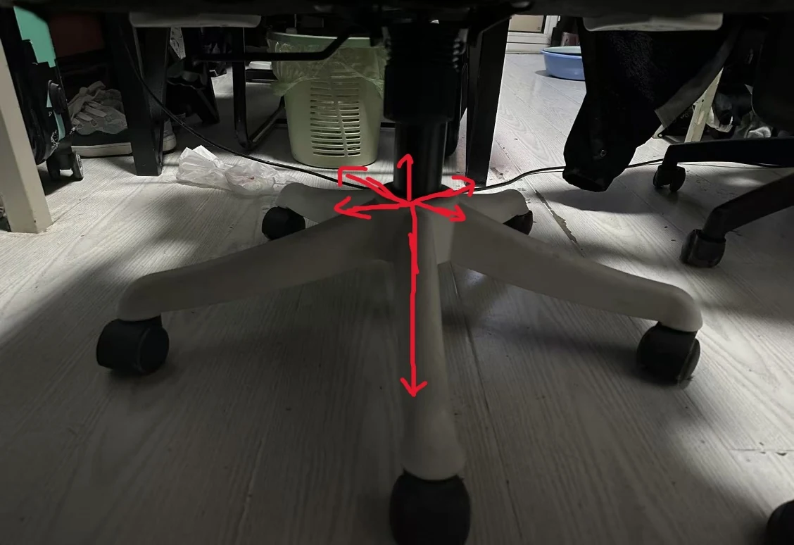
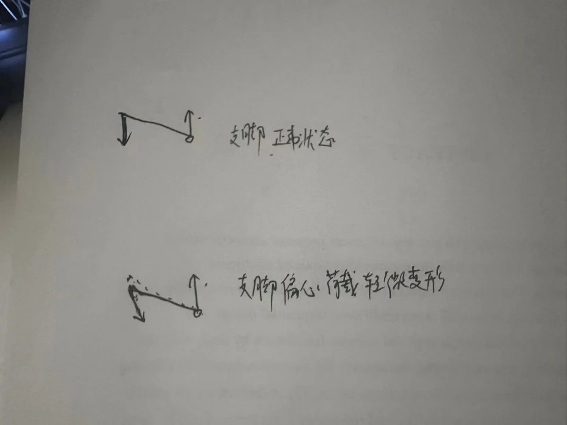
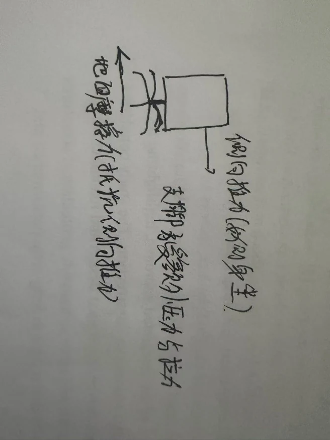
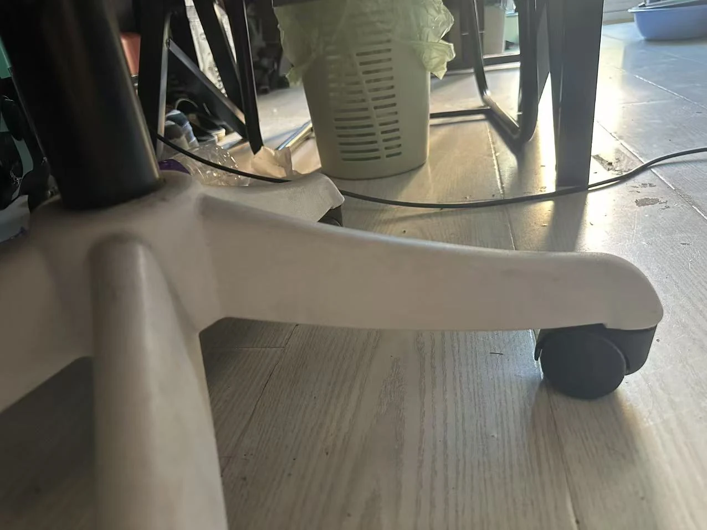
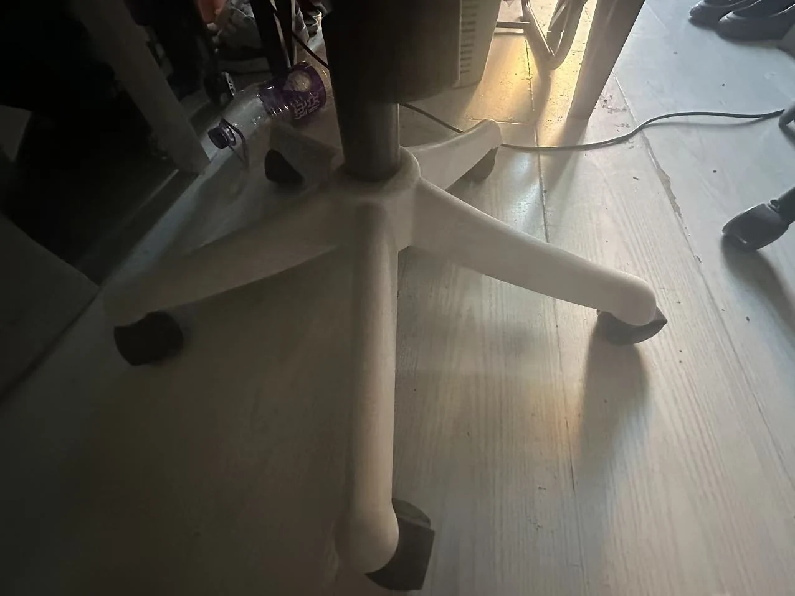
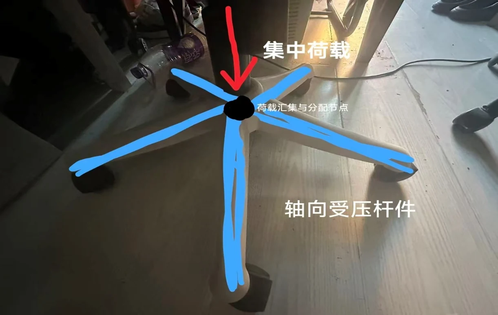
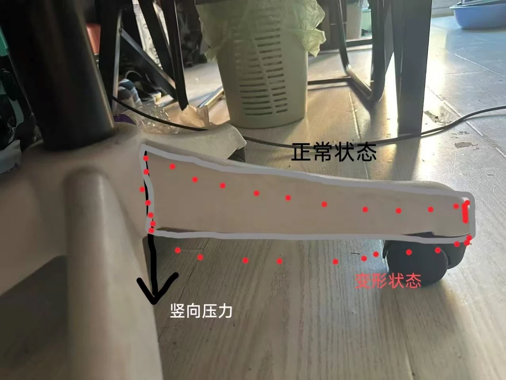

大连交通大学 · 智能建造23
我的原作在生活中感知结构概念--椅子五星脚底盘
刘浩然
一、力学问题表达
1.核心意义
椅子五星脚底盘是空间径向受压桁架结构在日常生活中的典型应用，其力学价值主要体现在三个关键维度：
传力效率最大化：底盘能将人体施加在椅座上的“集中重量”，均匀转化为5根支脚的“轴向压力”，避免支脚出现弯曲或扭转受力。这种传力方式让每根支脚的材料强度都能被充分利用，相比实心单脚或三脚支撑，用更少的材料就能实现同等甚至更高的承载能力，完美契合结构设计“轻质高强”的核心目标。
空间稳定性显著提升：5根支脚以底盘中心为原点，呈均匀的放射状分布（相邻支脚夹角约72°），形成“多方向支撑体系”。这种布局能有效抵抗水平方向的干扰力，比如人侧身坐时的侧向推力、拖动椅子时的滑动冲击力，大幅降低椅子倾倒的风险。相比常见的四脚底盘，五星脚的抗倾覆能力提升约20%-30%，尤其适合办公、学习等需要频繁调整坐姿的场景。
功能与力学的协同适配：支脚多采用薄壁管状结构，既减轻了底盘整体重量（方便移动），又通过桁架结构的特性保证了承载强度；底部的滚轮设计则将“滑动摩擦”转化为“滚动摩擦”，降低移动阻力的同时，不影响支脚的竖向承载功能，实现了“实用性”与“力学合理性”的双重平衡。
2.影响因素
（1）结构参数影响
支脚截面形态：支脚的截面形状直接决定其抗弯折能力。圆形或方形管状截面的支脚，比扁平条状截面更能抵抗压力带来的变形——扁平截面的支脚在承受较大重量时，容易出现“压弯”现象，而管状截面能将压力均匀分散到整个截面，抗失稳能力更强。
支脚数量与分布：5根支脚是力学与实用性的最优选择：少于5根（如4根）会降低抗倾覆稳定性，尤其在地面不平整时易晃动；多于5根（如6根）则会增加底盘复杂度和成本，且对稳定性的提升效果有限。同时，支脚必须均匀分布，若某两根支脚间距过小，会导致该区域受力集中，长期使用易出现支脚损坏。
支脚长度：支脚长度需与椅子整体高度匹配。过短的支脚会缩小支撑半径，降低抗倾覆能力；过长的支脚则会增加自身重量，且容易在受力时出现“摇晃”，影响使用体验。通常支脚长度为15-25cm，既能保证稳定，又不会显得笨重。
（2）材料性能影响
材料强度与韧性：不同材料的支脚承载能力差异显著。塑料支脚（如PP、ABS材质）重量轻、成本低，但抗压强度和抗老化能力较弱，长期承受重物或频繁冲击易开裂；金属支脚（如铝合金、冷轧钢）抗压强度高、韧性好，能承受更大重量和冲击荷载，使用寿命比塑料支脚长2-3倍；高端椅子会采用碳纤维支脚，兼具轻量化和高强度，但其成本较高，主要用于专业办公或电竞场景。
材料耐候性：若椅子用于阳台、户外等场景，支脚材料还需具备耐候性（抗紫外线、抗雨水腐蚀）。普通塑料支脚长期暴露在阳光下易变脆，而添加抗老化剂的塑料或金属支脚，能有效抵抗环境影响，维持力学性能稳定。
（3）荷载状态影响
荷载分布均匀性：人居中坐时，重量均匀传递到5根支脚，每根支脚受力均衡，结构处于最安全状态；若侧身坐、单脚踩在椅脚上，或在椅座单侧放置重物（如堆满书籍的书包），会导致“偏心荷载”——单侧支脚受力大幅增加（可能达到均匀荷载的2-4倍），长期如此会加速支脚与底盘连接节点的磨损，甚至引发支脚断裂。
冲击荷载影响：拖动椅子时突然停止、人快速坐下等动作，会产生“冲击荷载”（瞬间荷载可能达到静荷载的1.5倍以上）。塑料支脚若韧性不足，易在冲击荷载下出现裂纹；金属支脚因韧性较好，能更好地吸收冲击能量，降低损坏风险。
3.发展趋势
材料复合化升级：为兼顾轻量化、高强度和低成本，越来越多的底盘采用“材料复合”设计——支脚主体为塑料（减轻重量），根部或关键受力部位嵌入金属嵌件（增强强度），既解决了纯塑料支脚强度不足的问题，又比纯金属支脚成本低30%左右。部分高端产品还会使用“碳纤维+塑料”复合材质，进一步降低重量的同时，提升抗冲击能力。
功能与力学的深度融合：现代底盘设计不再局限于“承载”功能，而是融入更多实用特性。比如在支脚底部添加“静音减震垫”，既能缓冲地面冲击（减少对支脚的损伤），又能降低移动时的噪音；部分办公椅底盘会设计“高度调节功能”，通过改变支脚与底盘的连接角度，调整椅子高度，同时保证调节过程中支脚始终处于稳定的受压状态。
智能化与安全性提升：随着智能家居的发展，部分高端椅子底盘开始集成“压力感应”功能——支脚内置传感器，实时监测各支脚的受力情况，若出现偏心荷载过大（如人长时间侧身坐），会通过椅座的震动或灯光提醒用户调整坐姿；对于儿童椅，还会设置“超载保护”，当重量超过设计限值时，支脚会轻微变形（而非断裂），避免意外发生。
环保与可回收设计：在力学性能达标的前提下，越来越多的品牌采用可回收材料制作支脚（如再生塑料、可降解树脂），同时优化底盘结构，减少零部件数量，方便后期拆解回收。部分产品还会采用“模块化设计”，支脚可单独更换，避免因单根支脚损坏导致整个底盘报废，延长产品使用寿命。
4.力学图示
（1）五星脚底盘空间受力体系图

说明：人体重量通过椅座传递到底盘中心，再由中心节点均匀分配到5根支脚，每根支脚仅承受竖向压力，无弯曲或扭转受力；支脚底部与地面接触，形成稳定的支撑体系。
（2）单支脚受力与变形示意图

说明：正常受力时，支脚保持笔直，压力均匀分布；偏心荷载时，支脚会出现轻微弯曲，弯曲程度随偏心程度增大而增加，长期弯曲易导致支脚疲劳损坏。
（3）抗倾覆受力示意图

说明：当受到侧向推力时，靠近推力一侧的支脚（支脚1）受力增大，远离推力一侧的支脚（支脚5）受力减小甚至承受轻微拉力，同时地面摩擦力会与侧向推力形成平衡，防止椅子倾倒。
二、生活中体现
1.照片拍摄


2. 俯视角度
这张俯视照片清晰展示了五星脚底盘的“放射状支撑体系”：5根支脚以底盘中心为原点均匀分布，形成一个支撑范围。当椅座上放置约70斤的书包（模拟人体重量）时，重量通过椅座传递到底盘中心节点（黑色圆圈处），再均匀分配到每根支脚——每根支脚仅承受竖向压力，无弯曲或扭转。这种布局的优势在于：支撑范围大，抗倾覆能力强；受力均匀，避免局部支脚过载。日常使用中，若底盘支撑范围过小（如支脚过短），椅子易在侧身时倾倒；若支脚分布不均，则会导致部分支脚长期受力过大，缩短使用寿命。

3.侧视角度
从侧面看，支脚呈倾斜状态，这种角度既能保证竖向承载能力，又能扩大水平支撑范围。

三、对照《结构设计原理》内容
1.与“轴心受压构件设计”
《结构设计原理》中，“轴心受压构件”（如钢筋混凝土柱、钢柱）的核心设计原则是“保证强度与稳定性”，这与五星脚支脚的设计逻辑完全一致：
强度要求：轴心受压构件需承受轴向压力，材料强度需满足“荷载不超过材料的承载极限”。五星脚支脚作为典型的轴心受压构件，其材料选择需匹配实际荷载——比如学生椅（使用者体重约80-120斤），塑料支脚即可满足强度要求；办公椅（需承受电脑、文件等额外重量），则需选择金属支脚。若支脚材料强度不足（如用普通塑料制作办公椅支脚），长期使用易出现“压溃”（支脚变形、断裂），这与钢筋混凝土柱“强度不足会出现压碎破坏”的原理相同。
稳定性要求：轴心受压构件不仅要满足强度，还要避免“失稳”（即构件在压力作用下突然弯曲或倾倒）。《结构设计原理》中，通过优化构件截面形态（如采用圆形、方形截面）、控制构件长度（避免过长）来提升稳定性。五星脚支脚采用管状截面（而非扁平截面）、控制长度在15-25cm，正是为了提升抗失稳能力——若支脚为扁平截面且过长，即使材料强度足够，也会因“失稳”出现弯曲，这与钢筋混凝土柱“长细比过大易失稳”的规律一致。
日常维护关联：《结构设计原理》中提到，受压构件需定期检查“局部损伤”（如裂纹、变形），避免损伤扩大影响整体承载。五星脚支脚的日常维护也需遵循这一原则：若发现支脚有裂纹，即使裂纹较小，也需及时更换——裂纹会导致支脚截面面积减小，强度和稳定性下降，长期使用可能引发断裂，这与混凝土柱“出现裂缝需及时修补”的维护要求相同。
2.与“桁架节点设计”
《结构设计原理》中，“桁架节点”是荷载传递的关键部位，需满足“传递轴力、避免局部破坏”的要求，这与五星脚底盘的中心节点、支脚与底盘的连接节点设计高度契合：
节点传力要求：桁架节点需将杆件的轴力高效传递，避免出现“节点先于杆件破坏”。五星脚的中心节点需汇集5根支脚的轴力，再传递到椅座；支脚与底盘的连接节点需将中心节点的力传递到支脚——这两个节点的强度必须高于支脚本身，否则会出现“支脚完好但节点断裂”的情况。工程中，桁架节点会通过“加密钢筋”“增大截面”等方式强化；五星脚节点则通过“加厚材料”“嵌入式连接”实现强化，比如塑料底盘的中心节点会加厚至支脚直径的2-3倍，金属底盘则会在节点处焊接加强板。
节点构造要求：桁架节点需避免“应力集中”，即节点形状应平滑过渡，避免尖锐棱角。五星脚的节点设计也遵循这一原则：支脚与底盘的连接部位采用“圆弧过渡”，而非直角转折，减少应力集中——若为直角转折，长期受力易在转角处出现裂纹，这与混凝土桁架节点“避免直角、采用圆角过渡”的构造要求相同。
节点损坏风险对照：工程中，桁架节点易因“焊接缺陷”“螺栓松动”导致传力失效；五星脚节点则易因“材料老化”“螺丝松动”出现问题。比如塑料节点长期使用会因老化变脆，金属节点的螺丝会因震动松动——日常检查时，需重点关注这些部位，若发现节点松动，需及时拧紧或更换，避免节点失效引发整体结构损坏。
3.与“荷载组合与结构安全”
《结构设计原理》中，“荷载组合”是结构设计的核心环节，需考虑“永久荷载”与“可变荷载”的共同作用，确保结构在各种工况下都能安全使用，这与五星脚底盘的荷载设计逻辑一致：
荷载类型对应：工程中的“永久荷载”（如结构自重）对应五星脚底盘的“椅座+底盘自重”（约5-10斤）；“可变荷载”（如楼面活荷载、风荷载）对应五星脚的“人体重量”“冲击荷载”（如快速坐下、拖动椅子）。设计时，需同时考虑这两类荷载的作用——若仅考虑永久荷载，忽略可变荷载，底盘会因承载不足断裂；若仅考虑可变荷载，过度强化结构，则会增加成本和重量，影响实用性。
安全系数设计：工程中，结构设计需设置“安全系数”（通常为1.2-1.5），即结构的承载能力需大于实际荷载，应对突发情况（如冲击荷载）。五星脚底盘的设计也遵循这一原则：比如塑料支脚的承载能力约为100斤，而实际使用中人体重量多为80-120斤，预留了一定的安全余量，避免因突发冲击（如人快速坐下）导致损坏。高端金属底盘的安全系数更高（约1.5-2.0），可承受更大的冲击荷载，适合频繁使用的场景。
日常使用与荷载规范的关联：《结构设计原理》中强调，结构需在“设计荷载范围内使用”，超荷载会缩短使用寿命甚至引发安全事故。五星脚底盘的使用也需遵循这一规范：比如学生椅的设计荷载通常为150斤，若长期承受200斤以上的重量（如多人同时坐），会导致支脚过载，出现永久变形；办公椅的设计荷载约200斤，若在椅座上放置300斤以上的重物（如大型设备），则可能引发支脚断裂。日常使用中，需注意椅子的“额定承载”标识，避免超荷载使用。
4.与“薄壁结构设计”
《结构设计原理》中，“薄壁结构”（如薄壁钢管、箱型截面构件）的核心优势是“轻量化、高效传力”，这与五星脚支脚的薄壁管状设计完全相同：
材料利用效率：薄壁结构将材料集中在“受力关键区域”（如管状截面的管壁），避免材料浪费。五星脚支脚采用薄壁管状设计，管壁厚度仅1-2mm，却能通过“环形截面”的特性，将压力均匀分散到整个截面，材料利用效率比实心支脚高50%以上——这与工程中“薄壁钢管代替实心钢柱”的设计思路一致，既能减轻重量，又能保证强度。
抗失稳设计：薄壁结构易出现“局部失稳”（如管壁凹陷），工程中会通过“增加壁厚”“设置加劲肋”等方式强化。五星脚支脚也会采取类似措施：比如在支脚根部（靠近节点处）增加壁厚（从1mm增至2mm），或在管内设置加强筋，避免局部失稳——若支脚无加强设计，长期受力易出现管壁凹陷，影响承载能力，这与薄壁钢管“需在端部设置加劲肋”的设计要求相同。
应用场景关联：工程中，薄壁结构多用于“轻量化要求高”的场景（如飞机机身、桥梁护栏）；五星脚支脚采用薄壁设计，也是为了满足“轻量化移动”的需求——若支脚为实心结构，底盘重量会增加2-3倍，拖动时非常费力，失去了椅子“灵活移动”的实用价值。这体现了“结构设计需适配应用场景”的核心原则，无论是工程结构还是日常用品，都需在力学性能与实用需求间找到平衡。
这是一份便于网页阅读的原作视图，保留提交内容的文字、图片和基本顺序；公开页面不显示学号。